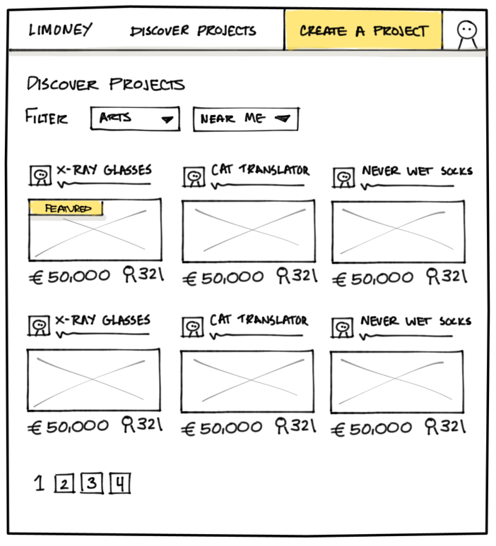

Prototyping for The Web Win!
Creating the right prototype and also general life advice. Hi.
Also cats.
@GhaidaZahran
Not Ms. Scratchy Bitey.
What is a prototype?
An early model of something that can be replicated and improved upon
in successive versions.
Why should you prototype?
With your prototype, you can test…
Concepts / features
Interactions and user flows
With your prototype, you can test…
Concepts / features
Interactions and user flows
Test concepts and features
Are we solving the right problem?
Test concepts and features
Will our solution accomplish our goals?
With your prototype, you can test…
Concepts / features
Interactions and user flows
Test interactions and flows
Is this a solution that customers expect?
Test interactions and flows
Is the solution discoverable?
Create quick iterations based on feedback
With positive feedback you can start fleshing out details
… and negative feedback won't make you nervous either
Solve problems through rapid iteration
“Ship it” —PM
Your requirements doc
is not enough
No matter how much user research it's based on.
Research. Prototype. Repeat.
Your prototypes will open the door to more questions
Research and prototyping are powerful allies
Takeaways
Discover problems early
Iterate quickly
Ship with confidence
Get to an answer faster
Cool. How do I prototype?
Methods of prototyping
for the web
Paper/sketch
Wireframes
Code!
Prototyping with sketches

Create quick, disposable, sketches to communicate
your ideas
String your images together in a clickable prototype to test your concepts
Best for early concepts
Avoid details in your sketches
Get high-level feedback
Time to working prototype
30 minutes
Prototyping with wireframes
Create detailed wireframes with content and hierarchy
Test detailed user flows with a clickable prototype made using existing wireframes
Best while “in the weeds”
Focus on the content
Get feedback on your flows
Tools
OmniGraffle
Sketch
Keynote
Time to working prototype
~1-2 hours
… depending on the size of your prototype
Prototyping with code
Whoa
Best for…???
Best when you have an
existing styleguide
Focus on flows
Tools
A text editor
An internal styleguide
… or a third-party framework
Time to working prototype
~30 minutes-2 hours
… Yep, the answer is still “it depends.”
Takeaways
Use sketches to discuss concepts
Prototype wireframes to get detailed feedback on content, hierarchy, and interactions
Prototype in code to streamline the transition to production, or have an existing styleguide/framework